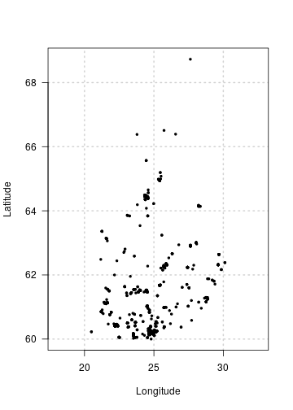

Visualisation is an important part of data exploration and analysis. The finbif package has a few functions and methods that can be used to visualise occurrence data from FinBIF.
The default plot() method for the result of a call to finbif_occurrence() will display (if available) coordinates of the occurrence points in a scatter-plot.
recent_obs <- finbif_occurrence(filter = c(country = "Finland"), n = 1000)
plot(recent_obs)
When you have many points to visualise it may be beneficial to display them in a 2-dimensional histogram with the density of points indicated by the shading or colour of filled grid-cells. The following outlines how this can be achieved using some tools provided by finbif.
First you’ll need to acquire some occurrence records. For example, you can use the following to get the latitude and longitude of all the Finnish records of Eurasian Jays where the coordinate uncertainty is less then 100m1.
jays <- finbif_occurrence(
"Eurasian Jay",
filter = c(coordinates_uncertainty_max = 100, country = "Finland"),
select = c("lon_wgs84", "lat_wgs84"),
n = 2e4
)Now you will need to define the break points of the grid cells over which to plot the density of occurrence records.
The finbif package has an inbuilt Finland map object which includes its bounding box.
finland_map$bbox
#> [1] 19 59 32 71You can use the function breaks_xy in combination with map bounding box to compute break points that a quarter of a degree in both dimensions.
(breaks <- breaks_xy(finland_map$bbox, size = .25))
#> $x
#> [1] 19.00 19.25 19.50 19.75 20.00 20.25 20.50 20.75 21.00 21.25 21.50 21.75 22.00 22.25 22.50 22.75
#> [17] 23.00 23.25 23.50 23.75 24.00 24.25 24.50 24.75 25.00 25.25 25.50 25.75 26.00 26.25 26.50 26.75
#> [33] 27.00 27.25 27.50 27.75 28.00 28.25 28.50 28.75 29.00 29.25 29.50 29.75 30.00 30.25 30.50 30.75
#> [49] 31.00 31.25 31.50 31.75 32.00
#>
#> $y
#> [1] 59.00 59.25 59.50 59.75 60.00 60.25 60.50 60.75 61.00 61.25 61.50 61.75 62.00 62.25 62.50 62.75
#> [17] 63.00 63.25 63.50 63.75 64.00 64.25 64.50 64.75 65.00 65.25 65.50 65.75 66.00 66.25 66.50 66.75
#> [33] 67.00 67.25 67.50 67.75 68.00 68.25 68.50 68.75 69.00 69.25 69.50 69.75 70.00 70.25 70.50 70.75
#> [49] 71.00The function hist_xy can be used compute the density of occurrences in the grid-cells defined by a set of break points.
jay_density <- hist_xy(jays, breaks)The function image() creates a grid of colored rectangles with colors corresponding to the density of occurrence records. You can use its arguments to control properties of the plot such as the aspect ratio2, the breaks3, the color palette, the axis labels and grid lines.
image(
jay_density,
asp = 2.4,
breaks = 2^seq(0, 12),
col = hcl.colors(12, rev = TRUE),
xlab = "Longitude",
ylab = "Latitude",
las = 1,
panel.first = grid()
)You can add a plot legend to indicate how the image breakpoints are mapped to the image colors.
legend(
"topright",
inset = c(0, .01),
legend = expression(2^12, "", "", 2^6, "", "", 2^0),
fill = hcl.colors(7),
border = NA,
bty = "n",
adj = c(0, 0.25),
x.intersp = .2,
y.intersp = .5
)Or the coordinate uncertainty has not been specified.↩︎
An aspect ratio of 2.4 minimizes the distortion of displaying Finland in a unprojected coordinate system.↩︎
Note that this is different from the break points for the grid cells. This breaks argument defines the break points for the grid cell colors.↩︎